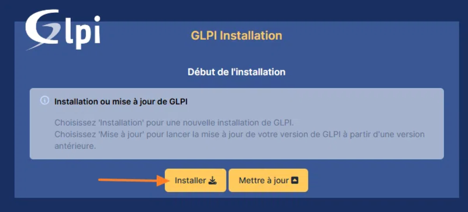

Projet GLPI Installation et configuration
Objectif
Dans le cadre du Bloc 1 – Support et mise à disposition de services informatiques, j’ai réalisé l’installation de GLPI en environnement local. L’objectif était de découvrir un outil de gestion de parc informatique et de tickets afin de comprendre comment centraliser les demandes d’assistance des utilisateurs.
Installation de l’environnement
Pour installer GLPI, j’ai d’abord mis en place un environnement serveur avec une machine virtuelle. J’ai utilisé un serveur web Apache, une base de données MySQL ainsi que PHP pour assurer le bon fonctionnement de l’application.
Après avoir téléchargé GLPI, j’ai copié les fichiers dans le répertoire du serveur web. J’ai ensuite créé une base de données dédiée à GLPI et configuré les accès avec un utilisateur spécifique. L’installation s’est faite via l’interface web en suivant les différentes étapes proposées par l’assistant.
Image : Interface d’installation de GLPI
Figure 1 – Assistant d’installation et vérification des prérequis.
Configuration initiale
Une fois l’installation terminée, j’ai configuré les paramètres principaux de l’application. J’ai créé des comptes utilisateurs et défini différents profils comme administrateur, technicien et utilisateur.
J’ai découvert la gestion des tickets, qui permet aux utilisateurs de signaler un incident ou de faire une demande. Les techniciens peuvent ensuite suivre et traiter ces demandes depuis l’interface d’administration.
Image : Interface principale de GLPI

Figure 2 – Tableau de bord après connexion administrateur.
Partie technique
GLPI permet également de gérer un inventaire du matériel informatique. J’ai ajouté manuellement des équipements comme des ordinateurs et des imprimantes afin de comprendre le fonctionnement du module de gestion de parc.
Ce projet m’a permis de voir comment un service informatique peut centraliser les incidents et organiser le suivi des interventions.
Image : Création d’un ticket

Figure 3 – Exemple d’un ticket créé par un utilisateur.
Bilan
Ce projet m’a permis de comprendre l’importance d’un outil de gestion d’incidents dans une organisation. J’ai rencontré quelques difficultés lors de la configuration de la base de données, notamment sur les paramètres de connexion, mais j’ai réussi à les corriger.
Conclusion
L’installation de GLPI m’a permis de découvrir un outil professionnel utilisé en entreprise pour la gestion du support informatique. Ce projet m’a aidé à mieux comprendre l’organisation d’un service d’assistance et le suivi des incidents. Je souhaite approfondir l’utilisation de GLPI, notamment avec l’ajout d’un agent d’inventaire automatique.